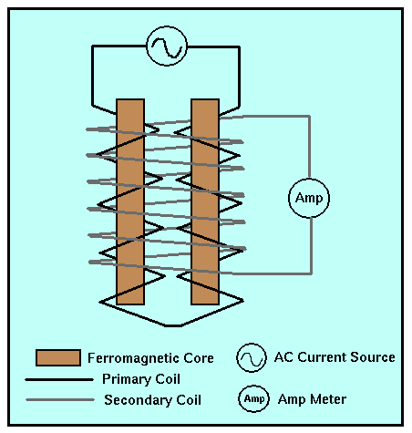

Fluxgate Magnetometer
The fluxgate magnetometer was originally designed and developed during World War II. It was built for use as a submarine detection device for low-flying aircraft. Today it is used for conducting magnetic surveys from aircraft and for making borehole measurements. A schematic of the fluxgate magnetometer is shown below.

The fluxgate magnetometer is based on what is referred to as the magnetic saturation circuit. Two parallel bars of a ferromagnetic material are placed closely together. The susceptibility of the two bars is large enough so that even the Earth's relatively weak magnetic field can produce magnetic saturation* in the bars.
Each bar is wound with a primary coil, but the direction in which the coil is wrapped around the bars is reversed. An alternating current (AC) is passed through the primary coils causing a large, inducing magnetic field that produces induced magnetic fields in the two cores that have the same strengths but opposite orientations.
A secondary coil surrounds the two ferromagnetic cores and the primary coil. The magnetic fields induced in the cores by the primary coil produce a voltage potential in the secondary coil. In the absence of an external field (i.e., if the earth had no magnetic field), the voltage detected in the secondary coil would be zero because the magnetic fields generated in the two cores have the same strength but are in opposite directions (their affects on the secondary coil exactly cancel).
If the cores are aligned parallel to a component of a weak, external magnetic field, one core will produce a magnetic field in the same direction as the external field and reinforce it. The other will be in opposition to the field and produce an induced field that is smaller. This difference is sufficient to induce a measureable voltage in the secondary coil that is proportional to the strength of the magnetic field in the direction of the cores.
Thus, the fluxgate magnetometer is capable of measuring the strength of any component of the Earth's magnetic field by simply re-orienting the instrument so that the cores are parallel to the desired component. Fluxgate magnetometers are capable of measuring the strength of the magnetic field to about 0.5 to 1.0 nT. These are relatively simple instruments to construct, hence they are relatively inexpensive ($5,000 - $10,000). Unlike the commonly used gravimeters, fluxgate magnetometers show no appreciable instrument drift with time.
*Magnetic saturation refers to the induced magnetic field produced in the bars. In general, as the magnitude of the inducing field increases, the magnitude of the induced field increases in the same proportion as given by our mathematical expression relating the external to the induced magnetic fields. For large external field strengths, however, this simple relationship between the inducing and the induced field no longer holds. Saturation occurs when increases in the strength of the inducing field no longer produce larger induced fields.